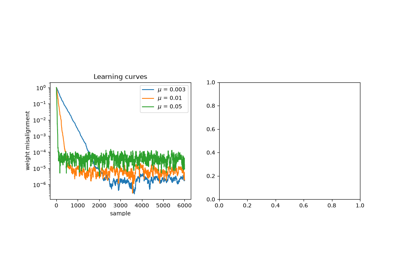
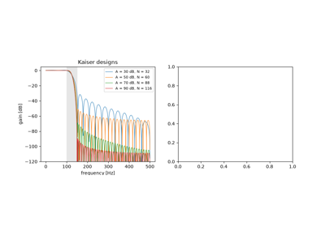
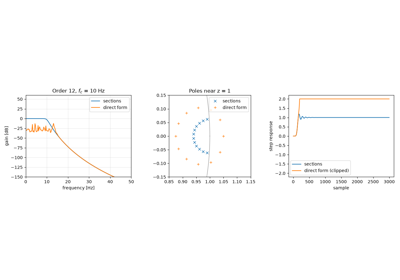
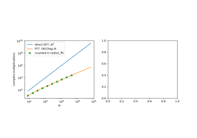
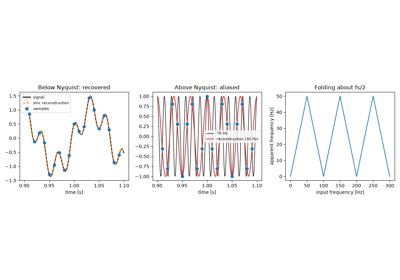
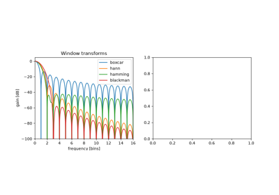

Examples#
This gallery walks through every public feature of
engineeringkit.signal_processing, one breakthrough per script: Fourier
series and the FFT, spectral estimation, sampling and quantization,
digital filter design, optimal and adaptive filters, and wavelets.
Units, assumptions and numerical validation
gives the validity limits. Each script is self-contained and can be run
directly with python examples/signal_processing/<section>/<script>.py.
Sections#
spectral – Schuster’s periodogram, the Wiener-Khinchin theorem, Gabor’s short-time transform, Blackman and Tukey’s windows, Goertzel’s algorithm and Welch’s averaged periodogram.
fourier – Gibbs’s phenomenon and the Cooley-Tukey FFT.
wavelets – Haar’s wavelet.
filters – Butterworth’s filter, Hurewicz’s z-transform, Wiener’s optimal filter, the LMS adaptive filter, Kaiser’s FIR design and second-order sections.
sampling – Bennett’s quantization noise and Shannon’s sampling theorem.
Filters#
Designing, analysing and implementing digital filters, from fixed designs to adaptive ones.

Widrow and Hoff’s LMS adaptive filter (1960)

Kaiser’s window method for FIR design (1966)

Jackson’s cascaded second-order sections (1970)
Fourier analysis#
Fourier series and the fast Fourier transform.

Cooley and Tukey’s fast Fourier transform (1965)
Sampling#
What is kept and what is lost when a signal is sampled and quantized.

Shannon’s sampling theorem and aliasing (1949)
Spectral analysis#
Estimating how a signal’s power is spread over frequency, and how that spread changes in time.

Blackman and Tukey’s spectral windows (1958)
Wavelets#
Bases that are local in both time and scale.